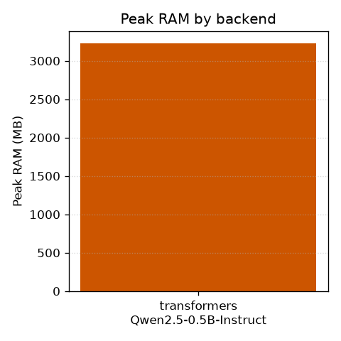
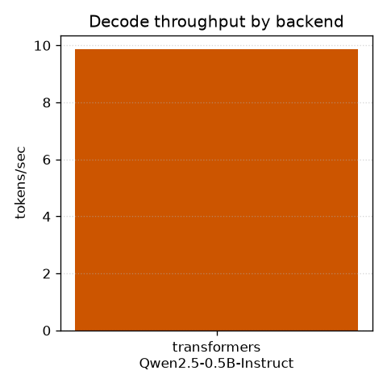
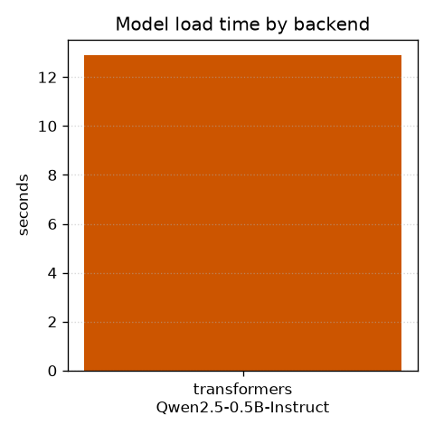

| Backend | Model | Status | Load (s) | TTFT (ms) | TPOT (ms) | Throughput (tok/s) | Peak RAM (MB) | Peak VRAM (MB) | Note |
|---|---|---|---|---|---|---|---|---|---|
| transformers | Qwen/Qwen2.5-0.5B-Instruct | ok | 12.9 | 774.9 | 101.4 | 9.9 | 3227.4 | n/a | |
| ollama | qwen2.5:0.5b | skipped | n/a | n/a | n/a | n/a | n/a | n/a | no ollama daemon at localhost:11434 (run `ollama serve`) |
| airllm | Qwen/Qwen2.5-0.5B-Instruct | skipped | n/a | n/a | n/a | n/a | n/a | n/a | airllm not installed (extra: airllm) |


